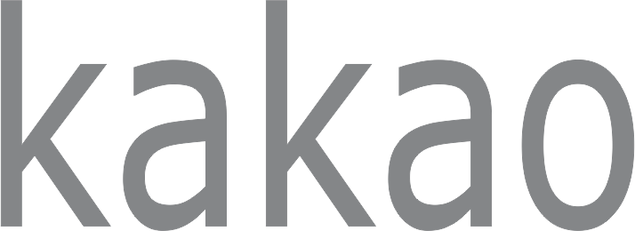
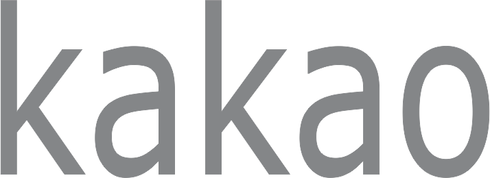

Welcome to:
THE 28TH NIGERIA ECONOMIC SUMMIT
2023 & Beyond:
Priorities for Shared Prosperity.
Okpah Igbo, Program Manager.
2022/11/14 ~ 2022/11/15
9:00 AM ~ 5:00 (UTC+1)
Transcorp Hilton, Abuja, Nigeria & Virtual.
Main Program
Economic Sustainability.
Economic Sustainability is the biggest economic opportunity of our times The global drive for investment in sustainability is at risk of waning in response to the pandemic’s economic impacts, but experience shows that sustainability itself brings economic opportunities.
Visionary Leadership.
Economic conditions can be in your favor. But sometimes the larger economy can be in decline, making business more difficult. . Visionary leader steps in at this time to make effective decision that will make nation thrived.
Inclusive Growth
Inclusive economic growth is about expanding national economies as well as the “equality of opportunity” and “participation in growth by all” with a special focus on the lower class and middle class and youth inclusive to sustain the future growth of nation in amisdt economic recession.
BreakTimeFood.
Very short breaks can be considered part of overhead for the project that you are working on but if they start bloating your project time you are taking too many of them (again, that is. A restaurant is open at the eastern wing of the venue for refreshment and relaxation
Investing In Our Future!
Investing in Nigeria's future entails expanding Nigeria's capabilities to invest in critical physical, financial, digital, technilogical and innovation infrastructure that support the building of our most valuable asset - Nigeria's human capital.
Featured Speakers
Partners

 
